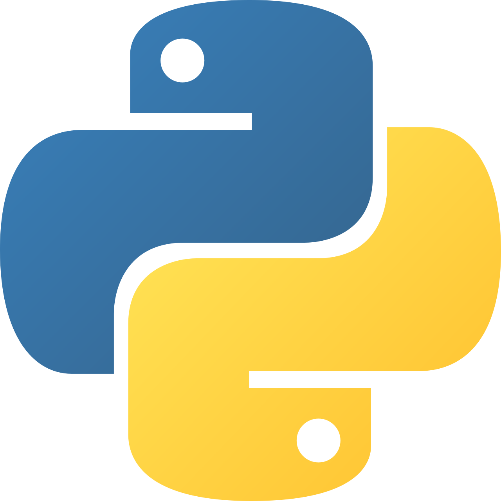
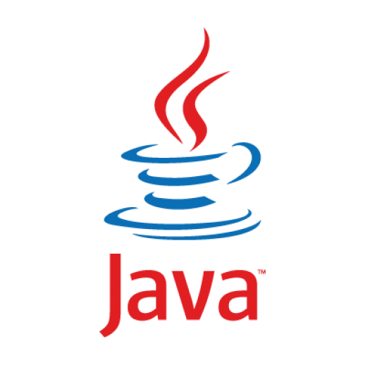
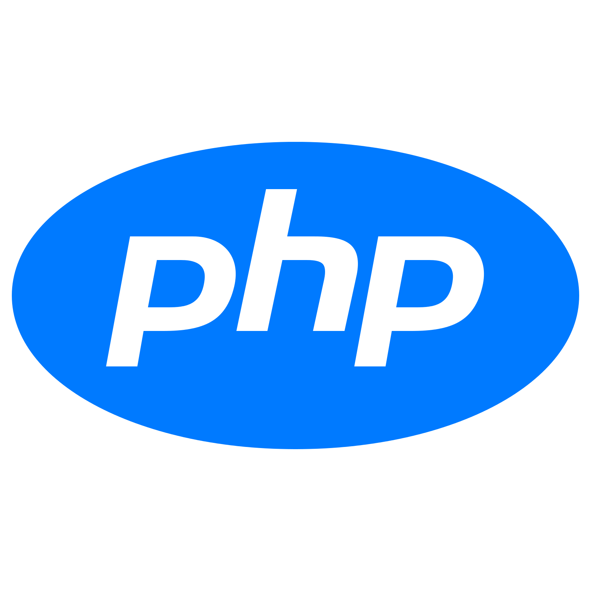
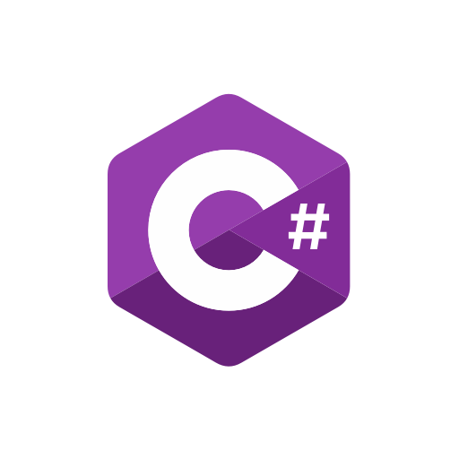
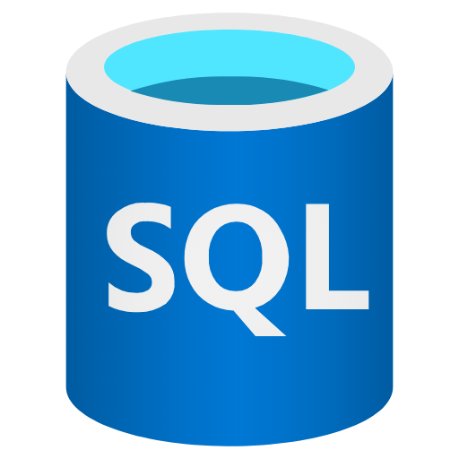

Python es un lenguaje de programación sencillo, versátil y fácil de aprender gracias a su sintaxis clara. Se utiliza para desarrollar aplicaciones, páginas web y diferentes tipos de programas. También es muy utilizado en inteligencia artificial, análisis de datos, automatización y aprendizaje automático. Es un lenguaje muy popular entre programadores y estudiantes, ya que permite crear proyectos de diferentes niveles de complejidad de una manera práctica y organizada.

Java es un lenguaje de programación orientado a objetos, conocido por su seguridad, estabilidad y capacidad de funcionar en diferentes sistemas. Es utilizado para desarrollar aplicaciones, programas empresariales, páginas web y aplicaciones móviles. Su estructura permite crear proyectos grandes y organizados, por lo que es muy utilizado por empresas y desarrolladores. Además, cuenta con una gran cantidad de herramientas y bibliotecas que facilitan el desarrollo de distintos tipos de aplicaciones.
JavaScript es un lenguaje de programación utilizado principalmente para crear páginas web interactivas y dinámicas. Permite agregar funciones como animaciones, botones, formularios y diferentes efectos a los sitios web. Se ejecuta principalmente en los navegadores, aunque también puede utilizarse en servidores y aplicaciones. Es uno de los lenguajes más importantes del desarrollo web y suele trabajar junto con HTML y CSS para crear sitios completos e interactivos.

PHP es un lenguaje de programación utilizado principalmente para desarrollar páginas y aplicaciones web dinámicas. Se ejecuta en el servidor y permite generar contenido que puede cambiar según las acciones del usuario. También puede conectarse con diferentes bases de datos para almacenar y administrar información. Es un lenguaje muy utilizado en Internet y permite crear sistemas como formularios, plataformas, tiendas online y diferentes tipos de sitios web.

C# es un lenguaje de programación desarrollado por Microsoft y orientado principalmente a la programación de objetos. Se utiliza para crear aplicaciones, páginas web, sistemas empresariales y videojuegos. Es compatible con la plataforma .NET, que proporciona diferentes herramientas para facilitar el desarrollo. Su sintaxis es estructurada y permite crear programas organizados y complejos. También es utilizado para desarrollar videojuegos mediante motores como Unity.

SQL es un lenguaje utilizado para trabajar con bases de datos y administrar información de manera organizada. Permite realizar consultas, agregar nuevos datos, modificar información existente y eliminar registros cuando es necesario. También permite ordenar y buscar datos según diferentes condiciones. Es utilizado en páginas web, aplicaciones y sistemas informáticos que necesitan almacenar grandes cantidades de información de forma segura, rápida y organizada.